덕수궁 북측 18동 — 외관만 바꾼 비교
기본 도형 / 이전 후보(실제 AI 채택 1동) / 새 면별 재료(18동). 같은 바닥·카메라·윤곽·깊이. 미감 미승인.
전체 지도나 실제 외관 복원이 아닙니다. 기존 목조 지붕의 단순한 형상과 바닥 반복 무늬도 그대로 남습니다.
상호작용 비교 화면 · 프롬프트·비용 · 기하 검사
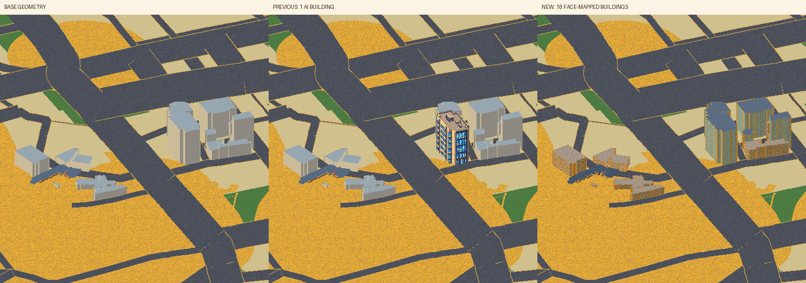
대표 3동
#4628 원배율 / 3배
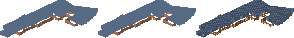
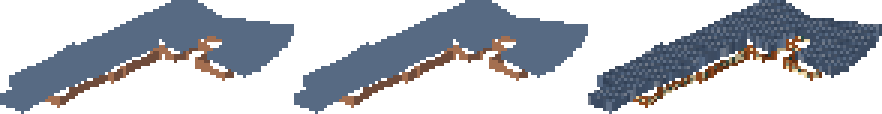
#4577 원배율 / 3배
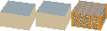
#4485 원배율 / 3배
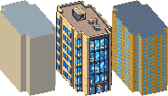
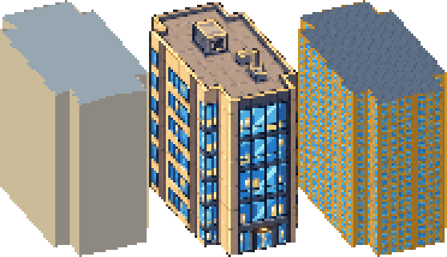
재료 반복
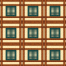
wood_wall · 3×3 반복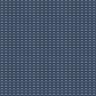
wood_roof · 3×3 반복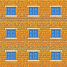
masonry_wall · 3×3 반복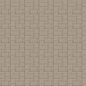
masonry_roof · 3×3 반복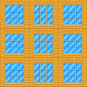
modern_wall · 3×3 반복modern_roof · 3×3 반복18동 개별 비교
#4323 · modern · 45.0m
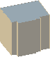
기본 도형 이전 후보
이전 후보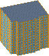
새 외관#4333 · modern · 48.0m
기본 도형 이전 후보새 외관
이전 후보새 외관#4335 · masonry · 27.0m
 기본 도형이전 후보새 외관
기본 도형이전 후보새 외관#4399 · masonry · 15.0m
 기본 도형이전 후보새 외관
기본 도형이전 후보새 외관#4438 · modern · 57.0m
 기본 도형이전 후보
기본 도형이전 후보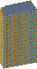
새 외관#4441 · masonry · 9.0m
기본 도형 이전 후보새 외관
이전 후보새 외관#4448 · modern · 30.0m
 기본 도형이전 후보새 외관
기본 도형이전 후보새 외관#4480 · masonry · 21.0m
 기본 도형이전 후보
기본 도형이전 후보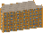
새 외관#4485 · modern · 60.0m
기본 도형이전 후보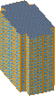
새 외관#4496 · masonry · 18.0m
기본 도형 이전 후보
이전 후보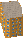
새 외관#4505 · masonry · 21.0m
기본 도형 이전 후보새 외관
이전 후보새 외관#4538 · masonry · 12.0m
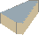
기본 도형 이전 후보
이전 후보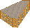
새 외관#4577 · masonry · 15.0m
 기본 도형이전 후보
기본 도형이전 후보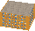
새 외관#4602 · masonry · 24.0m
기본 도형 이전 후보
이전 후보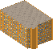
새 외관#4628 · wood · 5.0m
기본 도형 이전 후보
이전 후보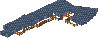
새 외관#4688 · masonry · 3.0m
 기본 도형이전 후보새 외관
기본 도형이전 후보새 외관#4693 · masonry · 9.0m
 기본 도형이전 후보
기본 도형이전 후보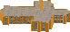
새 외관#4735 · masonry · 12.0m
 기본 도형이전 후보
기본 도형이전 후보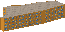
새 외관